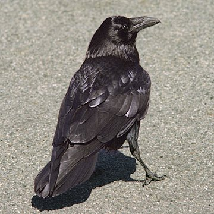

Forums galactiques > Assemblée Galactique : diplomatie officielle > Renaissance de l'Alliance Eternelle !!
Pages : 1 2
Commander Spartan25/06 ETU 18:54 | Je vote egalement pour lattribution du poste de commandant supreme de l'Alliance Eternelle a l'Archimage Antonophix . Il a mainte fois montré ses capacites diplomatiques et médiatrice pour organiser et tenter de retablir l'ordre dans "L'apres Arkk" . Aujourd'hui il est devenue un alliantiste modele car il a monter ce projet de restructuration de l'Alliance Eternelle , adressé une nouvelle voie a notre doctrine et j'espere faire la chasse aux dechus . j'espere de tout coeur que cet homme sera recompense par ces actes et qu'il fasse redorer notre faction . Vive l'Archimage Antonophix |
Dila25/06 ETU 21:17 | De même, moi, un petit fédéré soutient l'Archimage Antonophix. |
Necrid 25/06 ETU 23:30 | N'ayant rien à reprocher à ce commandant, je n'élève aucune réserve à son accesion au poste de représentant de l'Alliance. Amicalement, Commandant Necrid. |
Necrid25/06 ETU 23:30 | * accession |
| Herr Draicven  26/06 ETU 00:00 | en tant que jeune Alliantiste, je Vote pour vous aussi car vous inspirez confiance et surtout, vous saurez redonner un poids important a cette alliances. |
rambo26/06 ETU 15:31 | Est- ce que les votes sont finis? parce-que en tout cas c'est majorité absolue!! Il faut dire qu'il n'y avait pas abondance de concurrence... Félicitation Antonophix, je vois que vous êtes beaucoup aprécié mais vous le méritez |
Archimage Antonophix 27/06 ETU 11:26 | Avec 21 voix pour mon accession au poste de Représentissime de l Alliance je vous annonce que celle ci vien de sortir de ces cendres, ceux souhaitant rentré contactez moi par mp. |
Pages : 1 2
Forums galactiques > Assemblée Galactique : diplomatie officielle > Renaissance de l'Alliance Eternelle !!